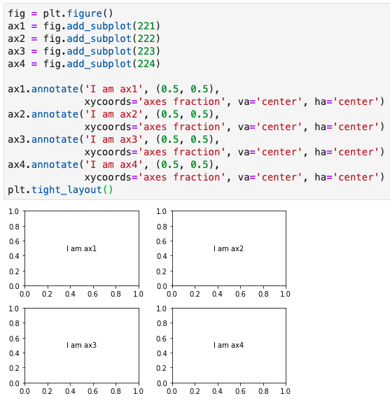
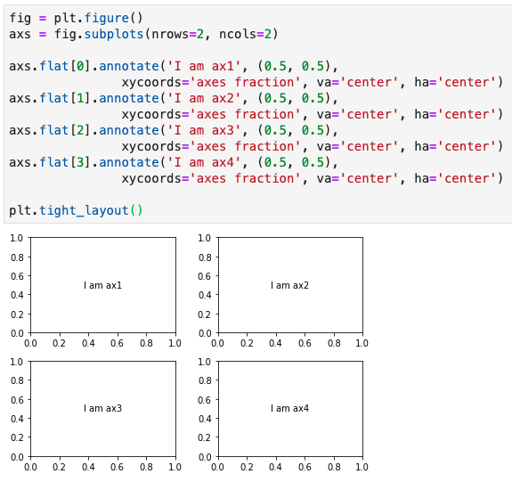
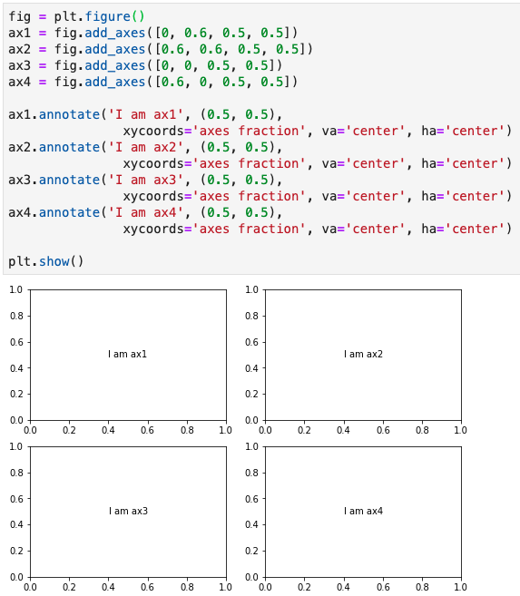

Although matplotlib is extremely powerful and the only limitation might be our imagination, it is a bit challenging for new users to find the right path as there are always more than one way to achieve the same goal in matplotlib. Calling axes is one of them.
Let’s say you just decide to make plots using object-oriented interface (aka artist layer plotting) in matplotlib. However, I bet you will be soon running into problems when trying to instantiate axes to start your plotting. You may find that plt.subplots() and plt.subplot() both can return you axes. Yes, they only differ by one letter ‘s’. Later, you notice that plt.axes() can call axes as well. It is not over yet, you highly likely will encounter the following functions fig.add_subplot(), fig.add_axes(), and fig.subplots(), which are all able to create axes for you. I totally understand how panic you are or will be as I have had the same confusion in learning matplotlib.
In this post, I will summarise the differences of these functions (i.e. plt.subplot(), plt.subplots(), plt.axes(), fig.add_subplot(), fig.subplots(), and fig.add_axes()) and demonstrate how to use them accordingly.
In matplotlib terminology, a basic plot starts from one figure and at least one axes (if you are confused about these terms, you may find this post is useful). A close analogy with painting, figure is the canvas and axes is the artistic composition. A canvas (figure) can have only one type or many different types of artistic composition (axes) on it. In light of this, let’s first start from a simple case for figure with only one axes, then dive into figure with multiple axes.
figure with only one axesIn most circumstances, we instantiate a fig object by calling fig = plt.figure(…) and then add an axes object to the fig by calling ax = fig.add_subplot(). By default, if leave the parentheses empty, this function is passed with fig.add_subplot(1, 1, 1), which means add # 1 axes in a 1 row by 1 column axes grid. We can also use an alternative format with 3-digit integer without comma (i.e. fig.add_subplot(111)). However, with the 3-digit integer format, each integer cannot be greater than 9. Using this function, we add only one axes at a time.
# Create a figure
fig = plt.figure()
# Add a subplot
ax = fig.add_subplot()
# Equivalent method
ax = fig.add_subplot(111)
# Another equivalent but more general method
ax = fig.add_subplot(1, 1, 1)Sometimes, we are able to add an axes object using ax = fig.subplots(). This function is originally devised to make it convenient to create a set of subplots in common layouts by a single call. It takes nrows and ncols as positional arguments (i.e. this function is supposed to add multiple axes at a time). However, if we leave the parentheses empty, this function is passed with fig.subplots(1, 1) by default, which means create an axes grid with 1 row by 1 column (i.e. one axes on fig). Hence the axes only contain one item in it (i.e. len(ax) is 1).
# Create a figure
fig = plt.figure()
# Create a subplot
ax = fig.subplots()
# Equivalent method
ax = fig.subplots(1, 1)Rarely, as for figure with one plot, we may also use ax = fig.add_axes([left, bottom, width, height]) to add an axes onto a fig. This function enables arbitrary layouts of axes on fig by taking the dimensions ([left, bottom, width, height]) of the new axes (you can find an example here). All four numbers should be in fractions of figure width and height. In other words, we control the position and size of the axes. fig.add_axes([0, 0, 0.78, 0.78]) creates the same size plot as by fig.add_subplot(111) and fig.subplots(1, 1). As you can see here, axes is not in the same size as figure. There is white space between axes and figure by default.
# Create a figure
fig = plt.figure()
# Add a subplot
ax = fig.add_axes([0, 0, 0.78, 0.78])After demonstrating the differences of the above three functions, it is fairly easy to understand plt.subplot(), plt.subplots(), and plt.axes(). They are from state-based interface (aka scripting layer plotting) of matplotlib, which just wrapped fig = plt.figure() with fig.add_subplot(), fig.subplots(), and fig.add_axes(), correspondingly.
plt.subplot() returns only one axes and create a figure object automatically. You can change figure-level attributes or save the figure by calling ax.figure.xxx() instead. For example, ax.figure.savefig('example.png') will save the figure as example.png.
# Creates just a figure and only one subplot
ax = plt.subplot()
# Equivalent method
fig = plt.figure()
ax = fig.add_subplot(1, 1, 1)plt.subplots() returns a tuple containing a figure and axes object(s). We need to unpack this tuple and assign its items to variables fig and ax, respectively.
# Creates just a figure and only one subplot
fig, ax = plt.subplots()
# Equivalent method
fig = plt.figure()
ax = fig.subplots(1, 1)plt.axes() returns one axes using fig.add_subplot(1, 1, 1) when no argument is provided and, just like plt.subplot(), it creates a figure object automatically. plt.axes() also accept dimensions ([left, bottom, width, height]) using fig.add_axes([left, bottom, width, height]) in its backend. The following two sets of code create the same plots.
# Set one
# Creates just a figure and only one subplot
ax = plt.axes()
# Equivalent method
fig = plt.figure()
ax = fig.add_subplot(1, 1, 1)
-------------------------------------------
# Set two
# Creates just a figure and only one subplot
ax = plt.axes([0, 0, 0.78, 0.78])
# Equivalent method
fig = plt.figure()
ax = fig.add_axes([0, 0, 0.78, 0.78])figure with multiple axesWhen it comes to plotting multiple axes on figure, the differences among these functions (i.e. plt.subplot(), plt.subplots(), plt.axes(), fig.add_subplot(), fig.subplots(), and fig.add_axes()) become manifest. Again, let’s demonstrate this using examples. Since plt.subplot(), plt.subplots(), and plt.axes() are essentially the same as fig.add_subplot(), fig.subplots(), and fig.add_axes(), I will only show examples for the later three functions.
As stated above, we add one axes at a time when using fig.add_subplot(). The build-in order of axes is started from left to right and from top to bottom within the axes grid (Figure 1). 
The same layout could be obtained using fig.subplots() with one line of code (Figure 2). It returns a ndarray object axs (I add a ‘s’ after ax to show that it contains multiple objects). Just like an 2D array object, each ax within axs can be accessed using axs[x, y] as well (i.e. ax1 can be accessed using axs[0, 0]). Moreover, if you like to assign names to each ax within axs, you can use tuple unpacking like this, ((ax1, ax2), (ax3, ax4)) = fig.subplots(nrows=2, ncols=2). Flattening of 2D array is another method to access ax from axs as shown in Figure 2. 
Normally, fig.add_axes() is used for arbitrary layout, such as a plot with inlet subplots or subplots overlap with each other. This is because we can fine-tune the position and size of each subplot by its dimensions ([left, bottom, width, height]). Having said that, we still can make a common layout as shown in Figure 1 and 2 using fig.add_axes() (Figure 3). 
In summary, these six functions (concisely should be three functions, i.e. fig.add_subplot(), fig.subplots(), and fig.add_axes()) can be used interchangeably when you are making a figure with only one axes. However, they have respective strengths and can be used individually or in combination when it comes to making figure with multiple axes in different layouts.
After reading this post, I hope you have a clearer understanding about how to call axes in matplotlib. All the codes in this post can be accessed from jupyter notebook. If you know other functions/cases to call axes which are not listed here, please feel free to leave your comment. Let’s learn matplotlib together.
As always, I welcome feedback, constructive criticism, and hearing about your data science projects. I can be reached on Linkedin, and now on my website as well.